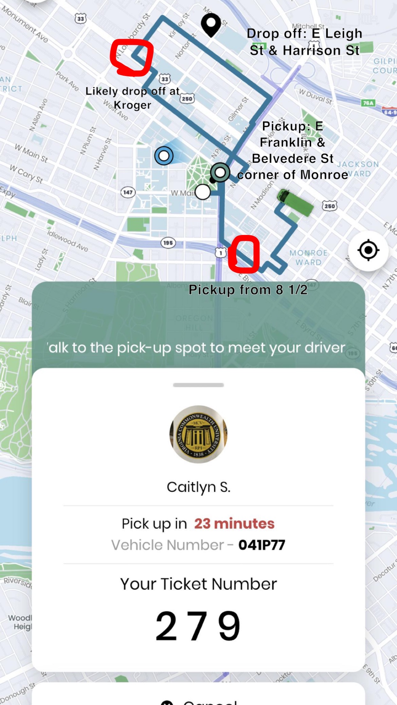
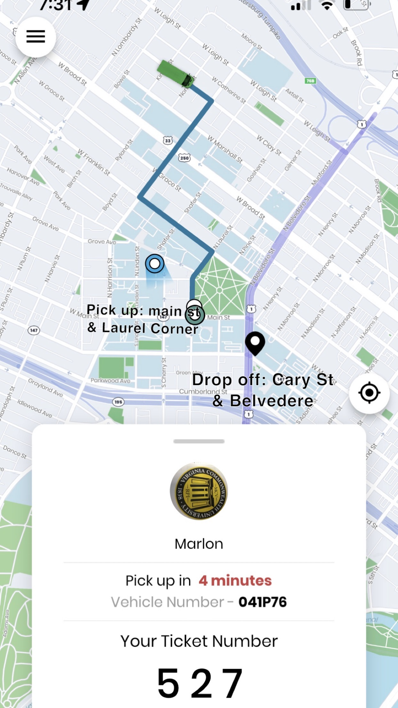
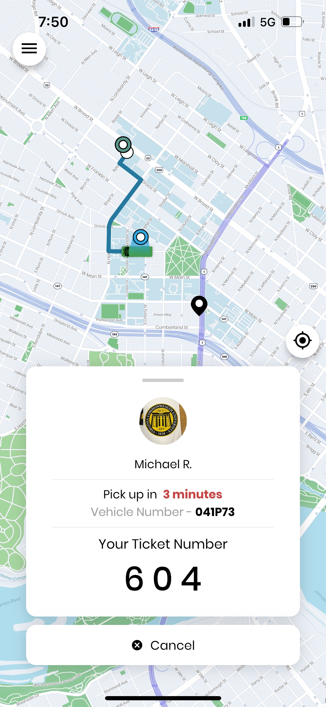

Ramsafe Research Report
Executive Summary
- This research report presents the findings of a simulation study conducted for VCU’s Ramsafe network, which functions similarly to Uber, allowing students to request pickups and drop-offs within VCU campus & Richmond midtown area. The study aims to improve the efficiency of the bus system, and analyze the routing decisions to find the optimal routine. The proposed algorithm prioritizes pickups while minimizing the total trip time for all passengers.
Introduction
- The university’s existing bus network faces challenges in terms of less optimal routes for picking up and dropping of creating unutilized bus capacity increasing individual wait times. This study’s objective is to develop an algorithm that addresses these issues while maintaining a balance between the system’s efficiency and carrying capacity.
Methodology
- Our team of 5 SSG member working on the Ramsafe project created 4 real-world scenarios to test the efficiency of busing routes. We sampled from pick up & drop off locations that were popular among VCU students, as well as locations that were frequented less often
Results
Test 1:
- We simulated 4 students along broad street that had all requested to be dropped off at the local Kroger on Laburnum. This is a popular destination for students, and many w/o cars utilize Ramsafe to transit to and from there to buy groceries. We Found that two busses were assigned for this task. One bus was assigned to the two students east of Belvedere St, and another was assigned to students on Broad St and further west. All of these students were on the west bound side, however the furthest Eastward bus was already assigned a prior pickup on 8 1/2 Canal. It’s likely this student was also requesting to go to Kroger, however it still would have been more efficient to go down Broad St and pickup the first student, then 8 1/2 Canal, and back to Broad St to pickup the remaining students before dropping them off at Kroger. Wait time were between 11-13 minutes.
Solution:
It would be more efficient to designate one bus for students traveling to the same location given their pick up locations are within a few blocks of the bus route to the destination and by giving students the option to walk a few blocks to get picked up faster.
Pictures:
Test 2:
- We simulated 4 students wanting to get dropped off within a 2 block radius of each other. These students were also requesting pickup within a 3 block radius of each other. Each student requested pickup on a different corner of Monroe park, and to be dropped off a block apart eastward on Leigh St starting behind Kroger. This test showed us that all 3 available buses were assigned for this task. Wait times were between 14-23 minutes.
Solution:
It would be more efficient to designate one bus for students requesting clustered pickups & clustered drop offs within a given radius of each other(e.g. 4 blocks)
Pictures:

Test 3:
- We simulated 2 students requesting to be picked up from the library and dropped off on Main & Jefferson. After their ride was confirmed, we requested another 2 students to be picked up in front of GRC and dropped off on Cary & Belvedere. The request of the second pair of students was a sub route of the first pair, however all 3 buses were assigned for this task.
Solution:
It would be more efficient to allow bus routes to augment so that students who are picked up 2nd can be dropped off 1st, given the augmented route ride time doesn’t exceed 15 minutes for the first pair.
Pictures:

Test 4:
Our 4th test was intended to test if paths can be augmented for students requesting to be dropped off at the same location when requesting 2nd pickup after 1st has been assigned. Two of our students experienced an error with the app where the screen turned white when entering the drop off location so we weren’t able to obtain conclusive results.
Pictures:

Discussion
- Our findings indicate that the proposed solutions would significantly improve the efficiency of the VCU Ramsafe network. By calculating the quotient of % increase in total trip time[max 15 minutes] / % increase in carrying capacity[min2] and optimizing routing decisions, the algorithm can prioritize pickups and drop-offs while minimizing the total trip time for all passengers given no passenger’s ride time exceeds 15 minutes.
Recommendations
- Based on the simulation results, we recommend the university implement the proposed algorithm to optimize the VCU Ramsafe network’s routing decisions. This will result in a more efficient system that prioritizes pickups and minimizes total trip time for all passengers.
Conclusion
- The proposed algorithm using the quotient calculation, successfully addresses the challenges faced by the VCU Ramsafe bus network. By implementing this algorithm, the university can create a more efficient and responsive transportation system for its students.